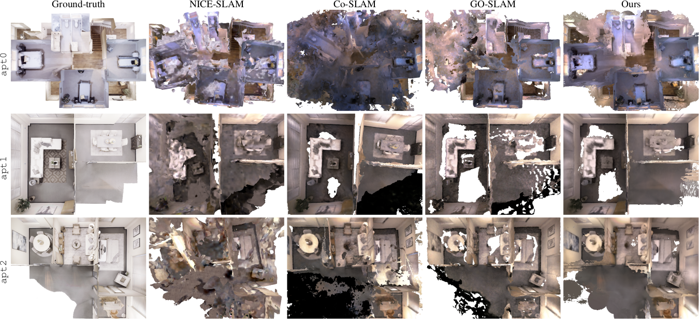
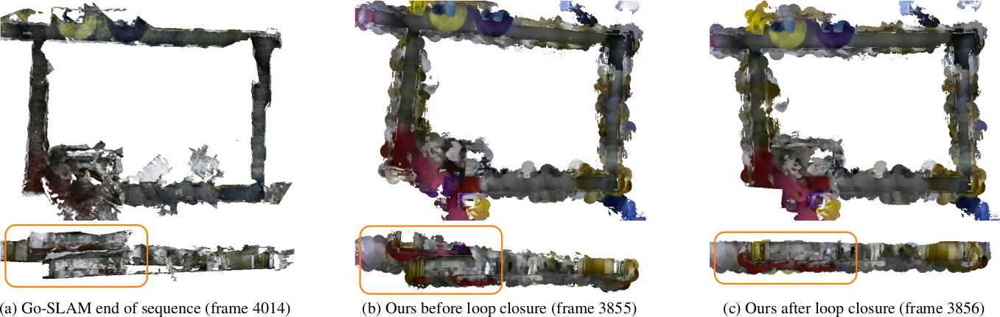
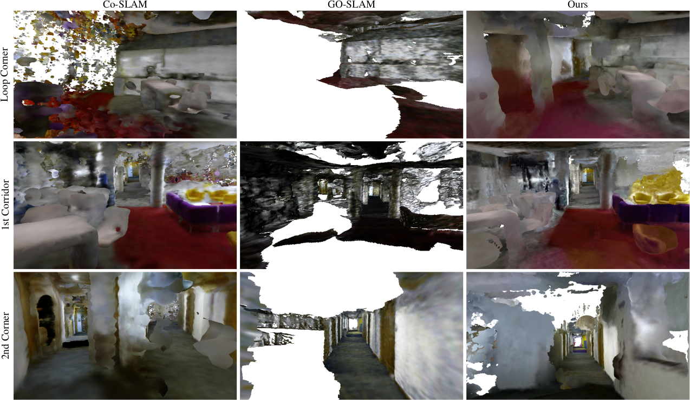
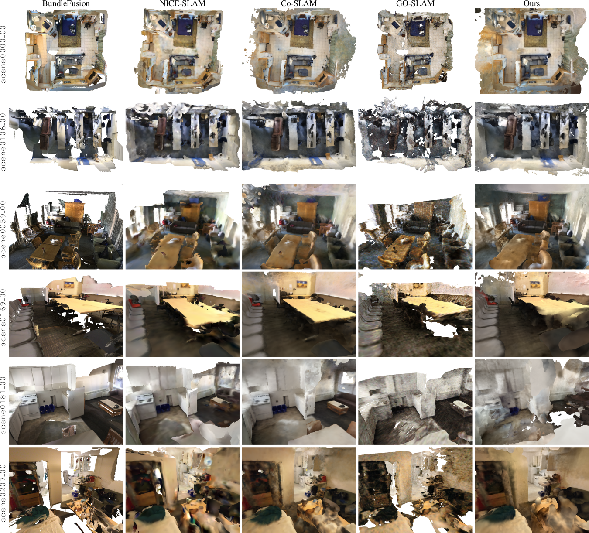
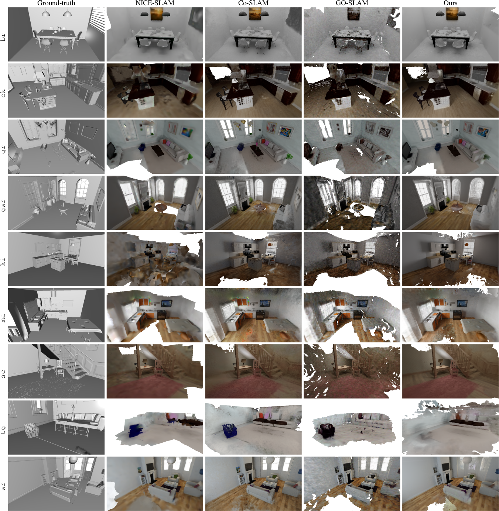
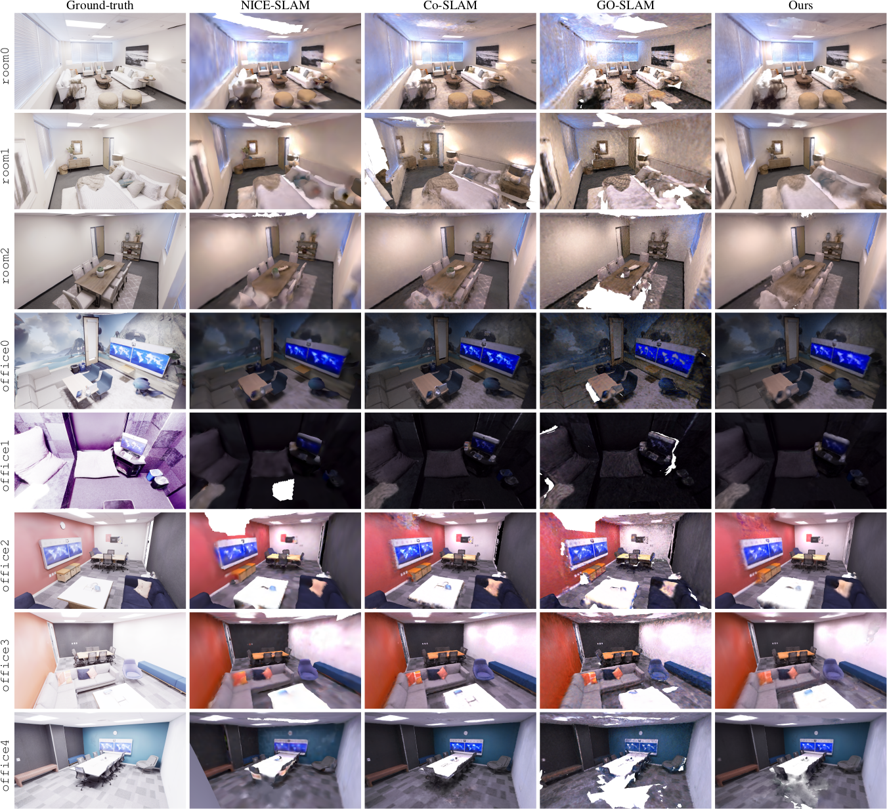

Abstract
Existing neural field-based SLAM methods typically employ a single monolithic field as their scene representation. This prevents efficient incorporation of loop closure constraints and limits scalability. To address these shortcomings, we propose a neural mapping framework which anchors lightweight neural fields to the pose graph of a sparse visual SLAM system. Our approach shows the ability to integrate large-scale loop closures, while limiting necessary reintegration. Furthermore, we verify the scalability of our approach by demonstrating successful building-scale mapping taking multiple loop closures into account during the optimization, and show that our method outperforms existing state-of-the-art approaches on large scenes in terms of quality and runtime.Method
blaResults





